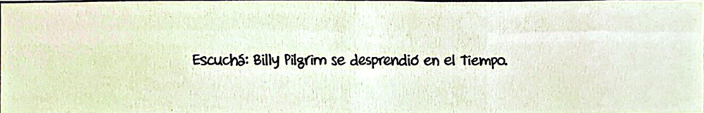
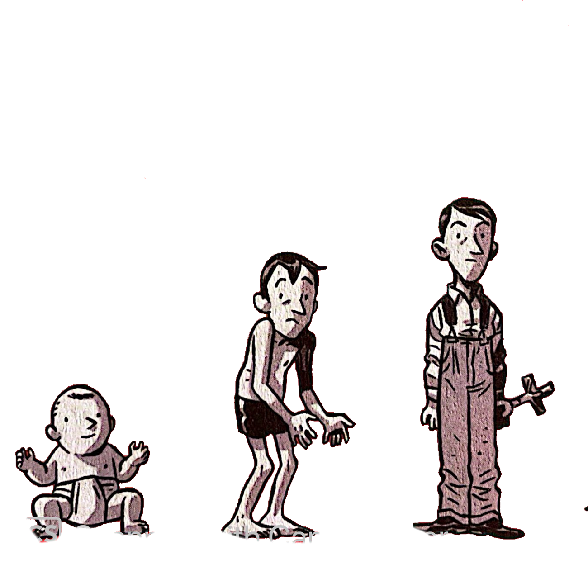

BILLY PILGRIM?
Quien es Billy?
Billy Pilgrim es un viajero del tiempo involuntario, desorientado profesional y héroe existencial de Matadero Cinco de Kurt Vonnegut. Un día está en la Segunda Guerra Mundial, al siguiente es abducido por extraterrestres tralfamadorianos y al rato… bueno, está viendo televisión en bata. 🌀 No vive el tiempo en línea recta —salta entre décadas como quien cambia de canal. ¿Querés experimentarlo vos también? Hacé clic en los años o dejate llevar por el botón mágico de “Saltar en el tiempo” y descubrí su caótica vida.
1922 a 1933 - Nace Billy
no hay mucho que contar de billy aca; todavia era un niño de aspecto extraño que aun no conocia a los Tralfamadorianos, ni los saltos en el tiempo, en la guerra, ni la paz, ni a Kilgore, ni sabia limpiarse del todo bien
1944 a 1945 – Capturado en la guerra
Durante la Batalla de las Ardenas, Billy es hecho prisionero y enviado a Dresde. Allí conocerá el Matadero Cinco.
1948 – Paciente Psiquiatrico
Paciente psiquiatrico en un hospital para veteranos ubicado en Lake Placid (Nueva York), ya comprometido con Valencia Merble.
Matadero Cinco.1955 a 1964 – Vida común
optometrista rico, padre de dos, que genera grueso de sus ingresos vendiendo marcos, porque ahí está la plata. Borracho de a ratos porque lo atormenta la vida y los saltos temporales. Se hace amigo de Kilgore Trout
1967 – Abducción
Billy es abducido por los tralfamadorianos y llevado a su planeta. Allí vivirá dentro de una cúpula transparente como parte de una exhibición junto a Montana Wildhack.
1976 – Muerte y no muerte
Billy es asesinado en una conferencia, pero para él, esto no representa un final. Solo otro momento en el tiempo.
“Billy no está muerto, solo se fue a otro momento.”